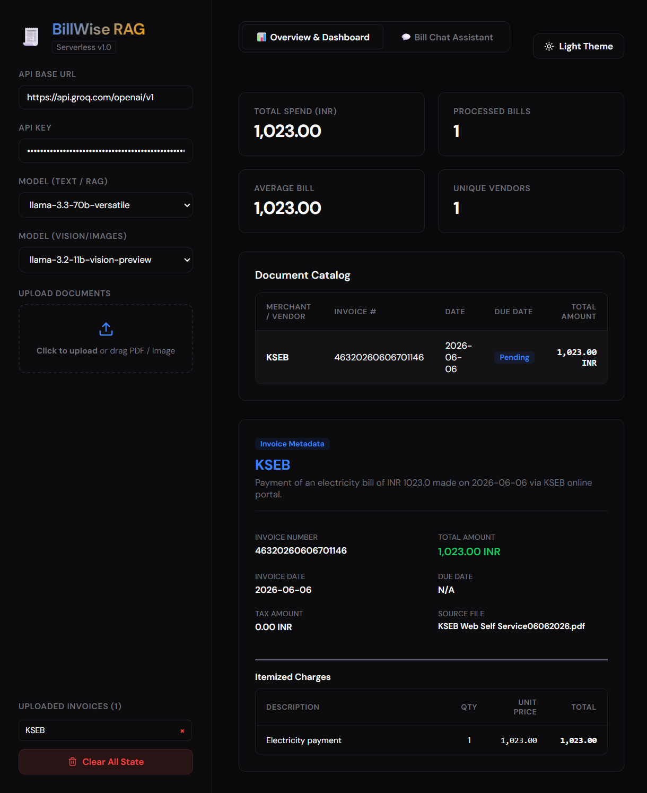
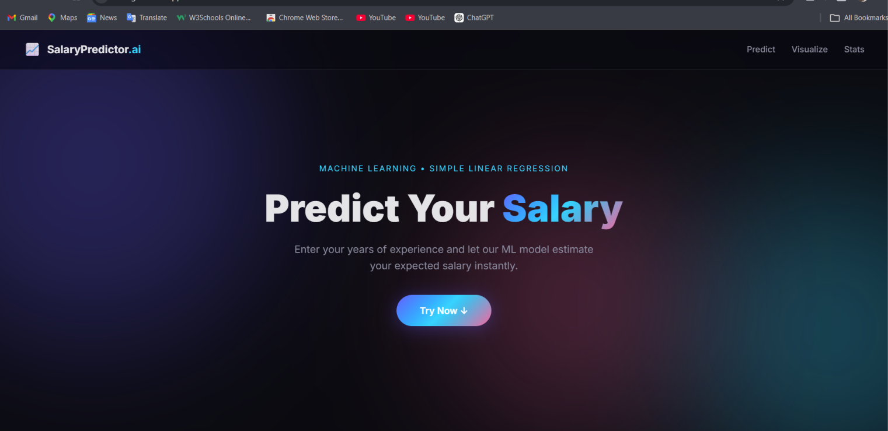

Available for AI Engineering/ ML / AI / Data Science Internship
Albert Cyriac
AI engineer focused on LLM applications and NLP
MCA student specialising in NLP, building LLM applications with prompt design, structured RAG, API integrations, and workflow automation. I enjoy testing and refining AI systems so their responses are accurate and useful.
I am a B.Sc. Mathematics graduate pursuing an MCA with an NLP specialisation, expected to graduate in 2027. I build AI applications by turning user needs into clear prompts and workflows, integrating models with APIs and databases, then testing and refining outputs for accuracy and usefulness.
My recent work includes a hybrid structured RAG invoice assistant, an AI nutrition platform, and a team-built smart waste pickup system. I am interested in prompt engineering, workflow automation, API integration, and practical machine learning.
Availability: Seeking AI engineering opportunities with a particular
interest in prompt design, workflow automation, and API integration. Open to remote roles.
BScMathematics GraduateRooted in Linear Algebra, Calculus, Statistics, & Operations
Research
MCANLP SpecialisationExpected 2027 · Current CGPA 8.52
AI+MLApplied IntegrationDeveloped production integrations using Gemini 2.0 and custom
regression pipelines with Scikit-Learn
Tools I use
A curated collection of languages, frameworks, and tools I use to bring
ideas to life.
Test my theoretical skills with interactive simulations built directly in
the browser.
Adjust Soil & Climate Sliders
Simulating ML classification using dynamic Euclidean distance
calculations against standard optimal crop centroids.
50 mg/kg
45 mg/kg
50 mg/kg
28 °C
1200 mm
Recommendation Engine
🌾
Rice
Confidence Match
87% Match
Rice requires high humidity, consistent temperatures, and extensive water levels
(high rainfall). Your current input parameters match the baseline prototype
characteristics of healthy paddy cultivation.
Drag town pins to adjust spatial layout and distances!
Exhaustive Enumeration (5 Nodes)
Calculates all 5! = 120 paths (cyclic: 12 permutations
start-independent) to visually guarantee the absolute shortest Hamiltonian path.
Permutations Scanned:0 / 24
Best Path Distance:- km
Optimal Order:
Click "Solve Route"
Distance Matrix (px)
Selected work
Real-world applications putting mathematical logic and machine learning to
test.

🧾
React + ViteFastAPIxAI / Groq APIRAGServerless
BillWise — Hybrid Structured RAG for Invoice Understanding
A document understanding app that extracts invoices into structured JSON before answering questions across bills, with a streaming conversational analytics interface.
Stateless Serverless Architecture: Structured a React + Vite frontend communicating with a FastAPI backend deployed on Vercel Serverless, maintaining in-memory session states without requiring database overhead.
Hybrid Structured RAG: Designed prompts and a pipeline to extract vendor, dates, totals, tax, currency, and line items into JSON before retrieval. This avoids incomplete answers from chunked invoice tables and does not require a vector database.
SaaS Dashboard Analytics: Engineered dynamic KPI metrics (Total Spend, Average spend, Bill count, and unique Vendor counts) with itemized invoice details and catalog tables.
Prompt Evaluation: Set up checks for extraction accuracy and answer quality, then iterated on prompts and data structure based on results.
Streaming RAG Chat: Built a FastAPI streaming endpoint and conversational Q&A interface with live responses, suggestion chips, and Markdown formatting.
A full-stack, enterprise-grade application generating personalized
meal plans and clinical tracking reports using LLMs and classic ML regressors.
Prompted Diet Recommendations: Wrote structured prompts for personalised meal plans, adding response parsing and guardrails to keep generated recommendations consistent and usable.
ML Prediction Engine: Calorie predictive logic using
Scikit-Learn linear and polynomial regression to calibrate basal
metabolic rates from water, activity, and weight trends.
Enterprise Database Architecture: Designed a relational schema
containing seven modular relational tables: UserProfile,
FoodItem, ConsumptionLog, WeightRecord,
WaterLog, DailyDietPlan, Transaction.
Reliable AI & Reporting: Added Gemini-to-Groq fallback with rate-limit handling, plus downloadable PDF and Excel reports using ReportLab and OpenPyXL.
An on-demand waste pickup platform where citizens request collections, collectors fulfill them with live GPS tracking, and admins manage everything via a real-time dashboard.
Team Leadership & Product Scope: Led a four-person final-year MCA team and worked with stakeholders to define the citizen, collector, and admin workflows.
Support Chatbot & Dispatch: Built an LLM customer-support chatbot using Groq with OpenAI fallback, plus Celery jobs to automate dispatch and collector assignment.
Live Collector Tracking: Added GPS updates over WebSockets and a three-role real-time service platform.
Payments & Rewards: Integrated Stripe, wallet, and cash-on-delivery payments with dual wallets for collector earnings and rewards.
Deployment: Containerised the application with Docker, deployed on AWS EC2, and connected a custom domain through Cloudflare.
Interactive Mapping: Integrated the Google Maps JavaScript API to enable citizen pin-drop location selection and collector route navigation displays.
An agricultural intelligence tool to assist farmers in deciding the
most optimal crop based on chemical soil values and weather factors.
ML Classifiers: Model training and validation on agricultural
Kaggle datasets using Random Forest, Decision Tree, and K-Nearest Neighbors to find
optimal performance thresholds.
Feature Engineering: Selected optimal soil properties (N, P, K
ratios), soil temperature, and average humidity parameters to reduce computational
overhead.
Interactive Simulation: Replicated custom evaluation loops in the
Math & ML Interactive Playground tab above.
Deployed ML Web Apps — Scikit-Learn + Flask + Vercel

Simple Linear RegressionInteractive Visualization
SalaryPredictor — Simple Linear Regression
Predicts annual compensation from years of experience using a model trained on salary data. A live regression line and model statistics make the fit visible.
Real-time slider predictions without page reloads
Displays R², intercept, and slope
Flask and scikit-learn backend deployed serverlessly on Vercel
Skills: Python, Flask, scikit-learn, Simple Linear Regression, data visualization, Vercel
Classifies Iris flowers into three species from sepal and petal measurements using the 150-sample Iris dataset, with a predicted class and confidence score.
StandardScaler preprocessing in the model pipeline
Evaluated with an 80/20 stratified split, accuracy, confusion matrix, and classification report
Classifies Iris species from the same flower measurements as the Logistic Regression app. Built as a parallel implementation to compare instance-based learning with a linear decision boundary.
Uses k = 5 and StandardScaler because KNN is distance-sensitive
Shares the same data split as the Logistic Regression model for comparison
Exploring advanced computer science concepts and deep mathematical proofs.
ML Foundations
Core Algorithms Implemented
Written from scratch or verified mathematically:
Naive Bayes Spam Classifier: Formulated and coded the joint
probabilities, utilizing Laplace smoothing to prevent zero-probability errors on rare
text vectors.
CNN Medical Classifier: Implemented convolutional filter matrices,
pooling layer downsizings, and dense activation functions to detect anomalies in
radiology scans.
Regression Pipelines: Derived coefficients for gradient descent
optimizing Mean Squared Error.
Operations Research
Mathematical Optimizations
Solving complex logistics and graph theorems:
Disaster Response Allocations: Linear programming models assigning
emergency supplies from surplus centers to dynamic demand regions, minimizing transit
costs.
Traveling Salesman Proofs: Rigorous validation of Hamiltonian cycle
optimal limits using sub-tour elimination inequalities and integer programming.
An intensive study of abstract algebras, multivariable calculus,
statistics, linear transformations, and numerical algorithms. Formed the logical
baseline of my coding career.
CGPA: 7.07 / 10.0
Certificates & Achievements
Selected certificates in data science, Python, and innovation.